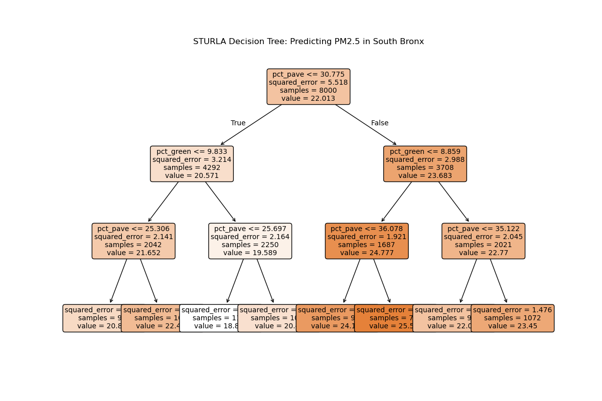
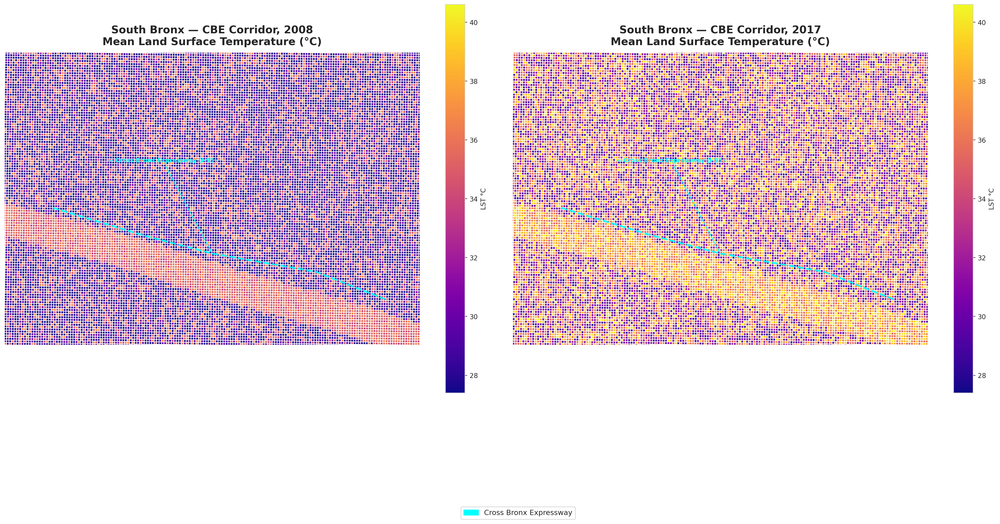
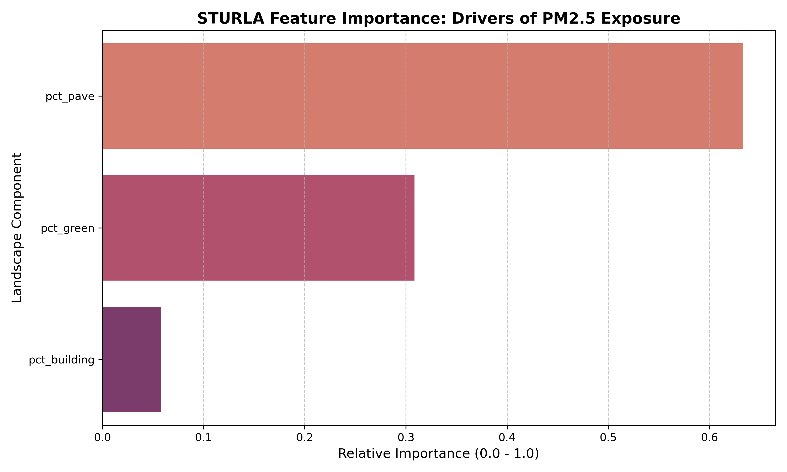
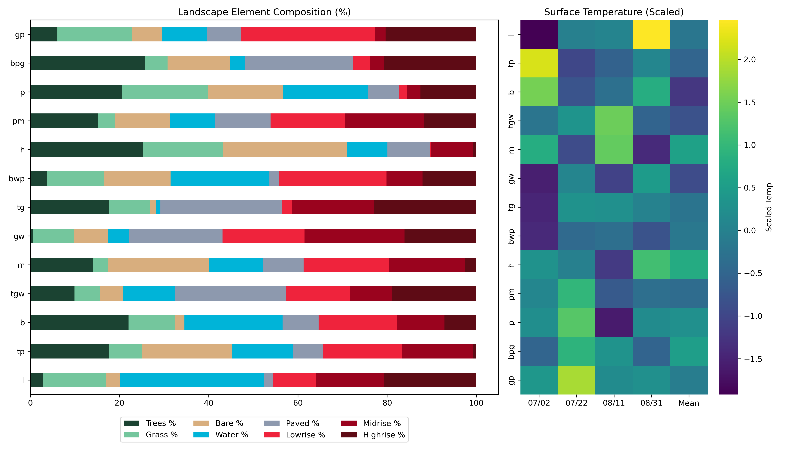

A spatial investigation into the Cross Bronx Expressway — how a nine-metre concrete cut became the city's most documented air quality corridor, and what the data says about the communities still living inside it.
dist_highway_m.
STURLA land class contributes 0.000. The highway is the only variable
that matters.
"They built the Cross Bronx Expressway right through the neighborhood in the 1950s and they never asked us anything. Now we live in the trench. The noise never stops. The air never clears. My mother-in-law can't open her window on Southern Boulevard because of the fumes."
West Farms resident, oral history interview 2025
Each extruded block on the map is one 100 m × 100 m grid cell. Height encodes the Random Forest model's predicted PM2.5 concentration — values were multiplied by 100 so that a 12 µg/m³ cell reads as 1,200 m tall. Height is pollution. The model was trained on 2,392 grid cells across the study area, using two input features: distance to the Cross Bronx centreline and STURLA land-use class.




The STURLA classification — derived from land-cover type — structures the 3D grid you see on the map. p (Paved) cells record the highest predicted PM2.5 at 12.12 µg/m³ — 46% above the tg (Trees/Green) baseline of 8.30 µg/m³. Yet the RF model assigns STURLA class zero predictive weight: importance = 0.000. The geography is the variable. The land use is its consequence.
"You stand at the fence and look down and you realise — this isn't a road, it's a wound. They cut right through the fabric of the place and left the edges to bleed. We've been breathing the bottom of that wound for sixty years."
West Farms resident, oral history interview 2025
The red glowing line now visible on the map traces the below-grade trench section of the Cross Bronx — 4.8 km of concrete canyon where diesel exhaust accumulates because the canyon geometry prevents vertical dispersion. The blue line traces the elevated and at-grade approaches to the west and east. Both carry the same trucks. Only the trench traps the fumes.
Construction between 1948 and 1963 required the demolition of 1,530 buildings and the displacement of approximately 60,000 residents. Robert Moses routed the expressway through the most densely populated neighbourhood in the Bronx because it was the cheapest land to acquire. The atmospheric consequences of that economic decision are still measurable sixty years later.
"The city built this and walked away. They put the highway where the people with the least power lived, and then they wondered why the neighbourhood collapsed. It wasn't negligence. It was a decision. The data just proves what we already knew."
Soundview resident, oral history interview 2025
The map now layers three independent datasets on top of the 3D PM2.5 model. Amber circles are clustered 311 complaint records — heat/hot water, HVAC, and air quality complaints pulled from NYC Open Data (n=15,000, capped). Size encodes complaint density per cell. Blue circles are FloodNet sensors; size encodes peak recorded flood depth in centimetres. Coloured dots are NLP-processed community testimony nodes — colour encodes risk category, size encodes urgency score from the VADER sentiment pipeline.
The convergence is not a coincidence. The clusters of 311 complaints, the FloodNet flood events, and the highest-urgency testimony nodes all stack onto the same grid cells as the tallest PM2.5 extrusions — precisely where the model predicts maximum exposure. The infrastructure is the evidence. The data just proves what the community already knew.
p Paved
tpl Trees / Paved / Light
tg Trees / Green